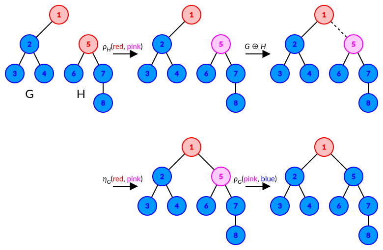

给定一棵仙人掌 $G$，请给出一组它的 $4-$团宽 (Clique-width) 构造。
(可以证明，仙人掌的团宽不超过 $4$)
第一行包含两个非负整数 $n, m$ ($1 \leq n \leq 50000; 0 \leq m \leq 50000$)，表示图 $G$ 的点数和边数。
接下来 $m$ 行，每行描述一条路径。每行的开始有一个正整数 $k$ ($2 \leq k \leq 1000$)，表示这条路径上的顶点个数。紧接着 $k$ 个 $1 \sim n$ 之间的整数，依次描述路径上的顶点。
一条路径可以多次经过一个顶点，但图中的每条边恰好在一条路径上出现一次。
第一行输出一个整数 $q$，表示团宽构造中的操作次数。可以证明，存在操作次数不超过 $10^6$ 的构造。
接下来 $q$ 行，每行描述一次操作，格式如下：
j a b 表示将顶点 $a$ 所在的图和顶点 $b$ 所在的图合并。你需要保证 $a$ 和 $b$ 不在一张图 (非不在一个连通块) 中。用标准记法即为 $G_a \oplus G_b$。r a c1 c2 表示将顶点 $a$ 所在的图中所有颜色为 $c_1$ 的顶点的颜色变为 $c_2$。用标准记法即为 $\rho_{G_a} \left( c_1, c_2 \right)$。c a c1 c2 表示将顶点 $a$ 所在的图中每个颜色为 $c_1$ 的顶点的和每个颜色为 $c_2$ 的顶点之间连接一条边。你需要保证 $c_1 \neq c_2$ 且之前该图中不存在一条边连接一个颜色为 $c_1$ 的顶点和一个颜色为 $c_2$ 的顶点。用标准记法即为 $\eta_{G_a} \left( c_1, c_2 \right)$。最后生成的仙人掌要和输入的完全相同 (包括编号)，而不仅仅是同构。
先来看如何构造一棵树。事实上，树的团宽是不超过 $3$ 的。
考虑 (递归地) 构造有根树，我们要求树中除了根节点外的所有点具有相同的颜色 (下面用红色表示)，根节点具有与之不同的颜色 (下面用蓝色表示)。
容易发现，我们只需要实现如下操作：「将一棵有根树作为另一棵有根树的根的一个子树」，就可以完成所有有根树的构造了。
那这个操作的具体方法如下：
于是我们完成了树的构造。不难发现，上述方法可以扩展到任意桥边。
对于仙人掌的情况，所有的桥边仍能通过上述方法完成 (因为桥边断掉后图断裂为两个连通块，显然两个连通块之间是独立的，可以分别完成后再按照上述方法接桥边)，那对于环内边呢？
先考虑圈图 $C_n$。$C_n$ 可以通过链 $P_n$ 加一条边得到，因此我们希望构造出一个能区分一个点的链。
因此我们可以将链的一个端点染成绿色，这样合并时就不会有影响了，最后再将绿色点与红色点连接起来。

当然，在实际构造仙人掌时，我们要按照正常的 dfs 顺序去构造，因此我们希望最终的红色顶点是子仙人掌的根，因此我们需要在构造圈图时指定根，而这也是不难的。
易知构造的总步数是 $O \left( n \right)$ 的，且常数适中。时间复杂度 $O \left( n \right)$。
#include <bits/stdc++.h>
using std::cin;
using std::cout;
const int N = 50054, M = N * 3;
int V, E;
int to[M], first[N], next[M];
int cnt = 0, id[N], low[N], p[N];
inline void down(int &x, const int y) {x > y ? x = y : 0;}
inline void addedge(int u, int v) {
to[++E] = v, next[E] = first[u], first[u] = E;
to[++E] = u, next[E] = first[v], first[v] = E;
}
namespace CW {
int n = 0;
std::ostringstream os;
inline void join(int a, int b) {++n, os << "j " << a << ' ' << b << '\n';}
inline void recolor(int a, int c1, int c2) {++n, os << "r " << a << ' ' << c1 << ' ' << c2 << '\n';}
inline void connect(int a, int c1, int c2) {++n, os << "c " << a << ' ' << c1 << ' ' << c2 << '\n';}
inline void print() {cout << n << '\n' << os.str();}
}
void dfs(int x) {
int i, y, z, u;
id[x] = low[x] = ++cnt;
for (i = first[x]; i; i = next[i])
if (!id[y = to[i]]) {
p[y] = x, dfs(y), down(low[x], low[y]);
if (id[x] < low[y])
CW::recolor(y, 1, 3), CW::join(x, y), CW::connect(x, 1, 3), CW::recolor(x, 3, 2);
} else if (y != p[x]) down(low[x], id[y]);
for (i = first[x]; i; i = next[i])
if (p[y = to[i]] != x && id[x] < id[y]) {
CW::recolor(x, 1, 4), CW::join(x, y), CW::connect(x, 1, 4);
for (z = y; (u = p[z]) != x; z = u)
CW::recolor(z, 1, 3), CW::join(u, z), CW::connect(u, 1, 3), CW::recolor(u, 3, 2);
CW::recolor(z, 1, 3), CW::recolor(u, 4, 1), CW::connect(u, 1, 3), CW::recolor(u, 3, 2);
}
}
int main() {
int i, j, u, v;
std::ios::sync_with_stdio(false), cin.tie(NULL);
for (cin >> V >> i; i; --i)
for (cin >> j >> u; --j; u = v)
cin >> v, addedge(u, v);
dfs(1);
return CW::print(), 0;
}
坑1：仙人掌的非树边在 dfs 时会遇到两遍，处理时需要固定一种进行处理 (最好是 id[x] < id[y] 时，此时所有的子树都已经构造完毕)。
坑2：输出过程可以使用 std::ostringstream 来简化。